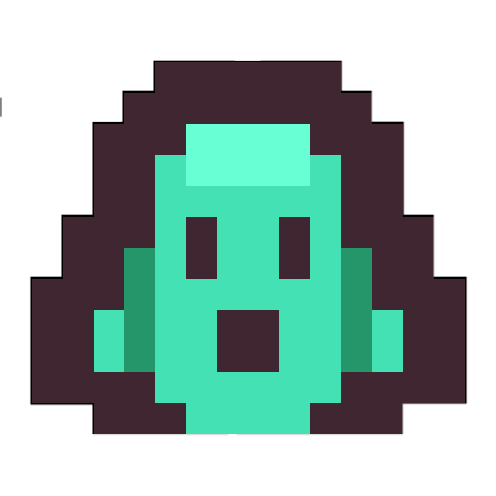

<mat-toolbar color="secondary">
    <mat-toolbar-row>
        <button mat-icon-button class="icon" routerLink="home">
            
        </button>
        <span class="spacer"></span>
        <span>{{titleNav}}</span>
        <span class="spacer"></span>
        <a mat-icon-button class="icon" style="font-size: 200%;" href="https://github.com/piedraprog/Hunt_The_Wumpus" target="_blank" rel="noopener noreferrer">
            <i class="fa-brands fa-github"></i>
        </a>
    </mat-toolbar-row>
    <mat-toolbar-row>
        <span class="spacer"></span>
        <button mat-button routerLink="home">{{ 'home' | translate }}</button>
        <!-- <button mat-button routerLink="leaderboard">{{'leaderboard' | translate}}</button> -->
        <button mat-button [mat-menu-trigger-for]="languages">{{ "languages" | translate }} ( {{ currentLang }} )</button>
        <span class="spacer"></span>
    </mat-toolbar-row>
</mat-toolbar>

<mat-menu #languages="">
    <button mat-menu-item *ngFor="let lang of langs" (click)="changeLenguage(lang)">
        {{lang}}
    </button>
</mat-menu>